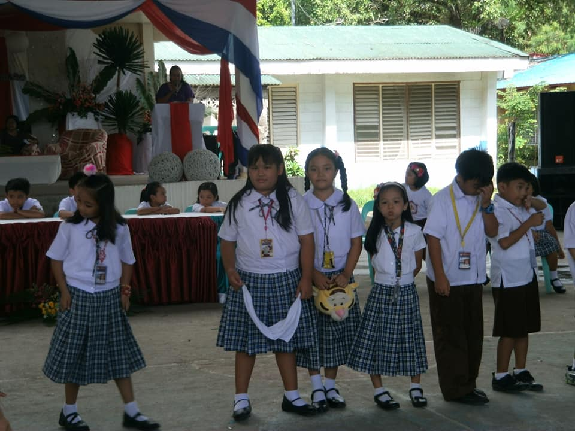
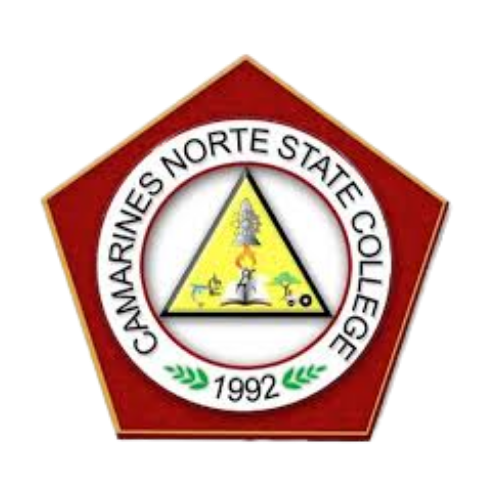
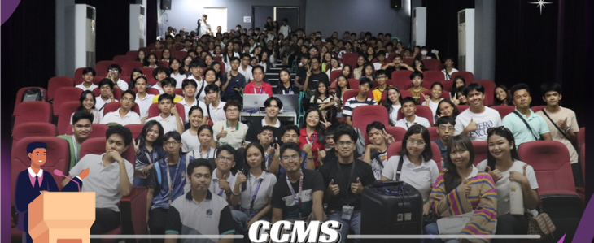

CNSC Abaño Laboratory Elementary School
Elementary Education

Completed elementary education at CNSC Abaño Laboratory Elementary School from 2011 to 2017. This institution, affiliated with Camarines Norte State College, provided foundational academic skills and values that prepared me for higher education.
- Developed strong foundational skills in core subjects
- Participated in various school activities and competitions
- Recognized as an Honor Student for consistent academic excellence
CNSC Abaño Laboratory High School
Junior High School (Grades 7-10)
Completed Junior High School education from 2017 to 2021, covering Grades 7 through 10. This phase of education developed essential skills in mathematics, science, language, and social studies, while fostering personal growth and preparing me for Senior High School.
- Mastered core academic subjects including Mathematics, Science, English, and Filipino
- Developed critical thinking and problem-solving abilities
- Maintained honor student status throughout junior high school
- Engaged in extracurricular activities and community service
Mabini Colleges - Senior High School
STEM Track (Grades 11-12)

Completed Senior High School education from 2021 to 2023, covering Grades 11 and 12 under the K-12 Basic Education Program. Specialized in STEM track, which provided focused learning aligned with my college and career goals.
- Track: Science, Technology, Engineering, and Mathematics (STEM)
- Graduated with Highest Honors - the highest academic distinction
- Awarded 2nd Best Capstone Paper for research excellence
- Received Best in Pitching award for presentation skills
- Developed advanced skills in mathematics, sciences, and research methodology

Camarines Norte State College
College of Computing and Multimedia Studies
Currently pursuing a Bachelor of Science in Information Technology (BSIT) at the College of Computing and Multimedia Studies since 2023. CNSC CCMS is dedicated to developing competent IT professionals equipped with technical expertise, critical thinking, and innovative problem-solving skills.
- Degree: Bachelor of Science in Information Technology (BSIT)
- Year Level: 2nd Year
- Developing expertise in web design, programming, and multimedia
- Serving as Multimedia Officer at CCMS Student Government
- Member of Junior Council Project Monitoring Development Committee
- Active participant in USSG Committee on Guidelines and Policies